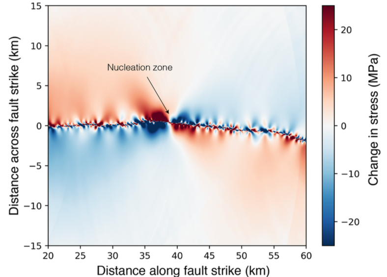
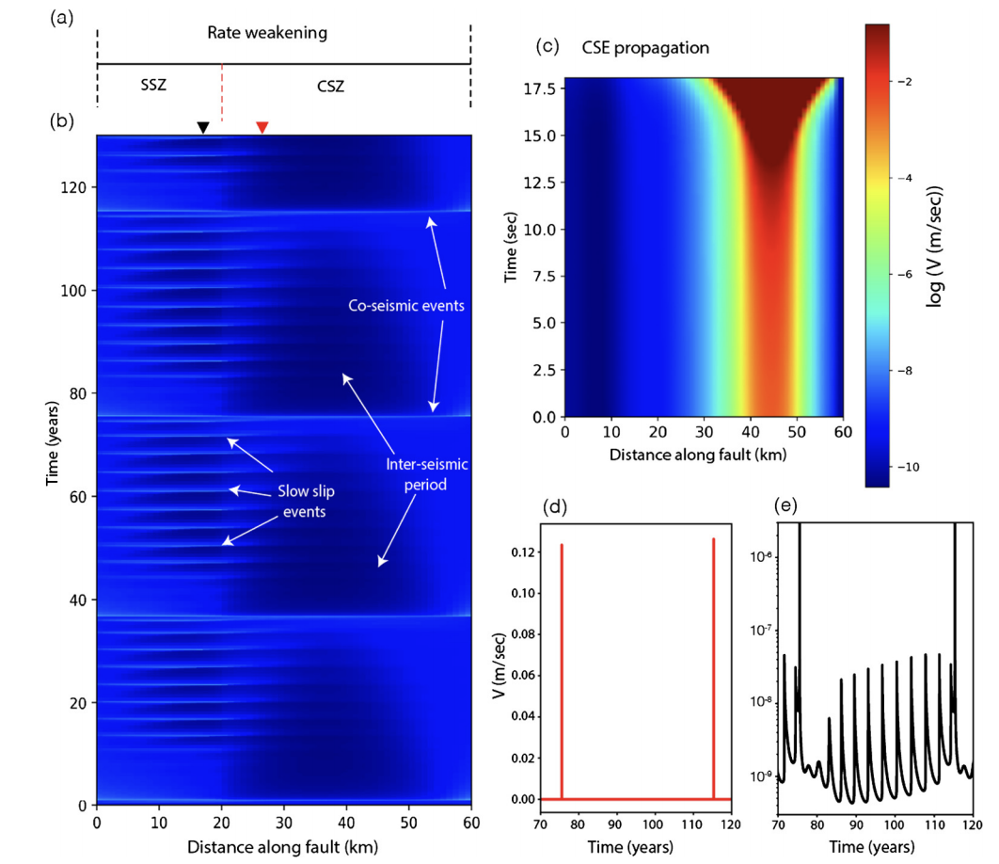
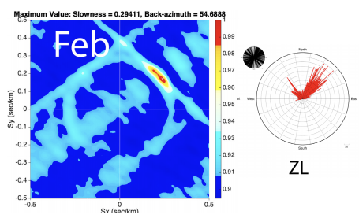
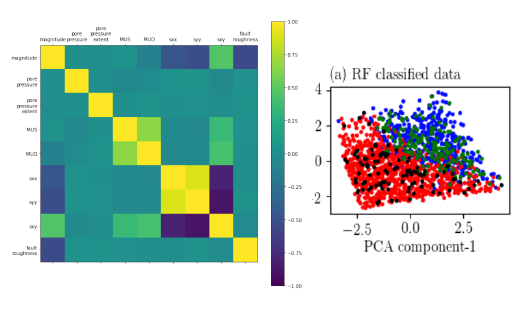
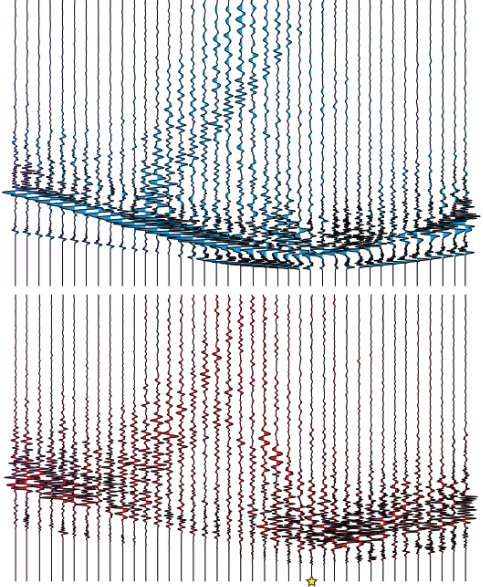

Khurram Aslam's personal webpage
I am a Postdoctoral fellow at University of Oregon , Eugene, OR, USA since September 2019. My work focuses on modeling earthquake rupture propagation. I have done my PhD from Center for earthquake research and information (CERI) , U of Memphis, USA, and masters from Abdus salam International center for theoretical physics, Trieste, Italy . Additionally, I have also worked for oil and gas sector (Landmarks). My Resume and LinkedIn has more information about myself. The details of some of my research projects are provided below:Research projects
Dynamic Earthquake Rupture Modeling
I am currently working on physics-based simulations of earthquake rupture propagation on Cascadia subduction zone to understand shallow rupture process effects on the tsunami generation. I previously worked on rupture modeling of geometrically complex strike-slip faults to examine the off-fault stress changes resulting from dynamic fault slip. I consider many different realizations of the rough fault profile and use the output of the dynamic rupture simulations to calculate the Coulomb failure function (CFF) for each realization. Details of the project are available in pdfs present in my publication page.
Earthquake Cycle Modeling
I performed physics-based simulations of earthquake cycles to understand the coupling of slow-slip regions with regions of earthquakes. The modeling work shows how the rupture can penetrate into the region of slow slip and result in higher seismis hazard. Details of the work is provided in publication section. I also coupled the short-term (dynamic) phase and the long-term (quasi-static) phase of an earthquake to understand the physics of an earthquake cycle. I did it by solving the dynamic phase first and then the quasi-static phase of an earthquake. For solving the quasi-static phase, we consider finite element method to solve the momentum balance equation. The inertia term is damped using mass scaling technique. The codes are present in the repositories link in my webpage. Details of the project are available in pdfs present in my publication page.
Seismic Ambient noise
We (I and my collaborators) processed the seismic ambient noise data for few years from the New Madrid seismic region. The data was used to find the major direction of the ambient noise sources and also to observe the embayment edge generated surface waves. We used beam forming, SNR ratio and relative amplitude approach to find the sources. additionally, we also looked at the change in seismic velocity relation as a function of time with the climatological data. Details of the project are available in pdfs present in my publication page. The ML code is present in repositories link.
Machine Learning
We (I and my collaborators of the project) estimated the max. possible magnitude of an induced earthquake in Oklahoma using Machine learning approach. We do this by running multiple ruptures on a complex strike-slip fault with inherent fault roughness. The rupture nucleation is provided through the elevated pore pressure. We use full length of the fault (400 parameter), stresses ( 3 parameters), Slip weakening law (3 parameters), RMS height of fault (1 parameter) with 4000 rupture simulations to train our model for a regression problem that can predict earthquake magnitudes. To train a model, we use neural networks with three hidden layers and 10 units in each layer. This work is build upon a previous study done by our group (Elizabeth Gilmour). Details of the project are available in pdfs present in my publication page. The ML code is present in repositories link.
Full 3D waveform Modeling
I perform three-dimensional (3D) deterministic earthquake ground motion simulations for the northern Canterbury plains, Christchurch and the Banks Peninsula region of New Zealand, which explicitly incorporate the effects of the surface topography. The simulations are done using Hercules, an octree-based finite-element parallel software for solving 3D seismic wave propagation problems in heterogeneous media under kinematic faulting. We describe the efforts undertaken to couple Hercules with the South Island Velocity Model (SIVM), which included changes to the SIVM code in order to allow for single repetitive queries and thus achieve a seamless final-element meshing process within the end-to-end approach adopted in Hercules. Details of the project are avaliable in pdfs present in my publication page.